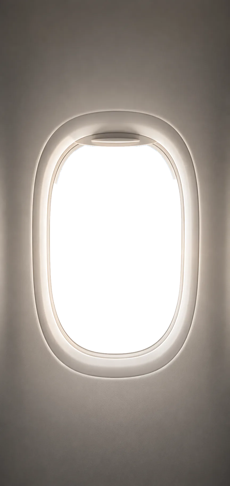

톤 점검 — 오너 지적 5건
2026-07-29 · 대비 수치는 전부 실측(라이브 DOM + 사진 픽셀 샘플). 각 안은 실제로 렌더된 것이지 이미지가 아닙니다.
지적 1인트로가 흐리고 상단 메뉴가 안 보인다
→ 맞습니다. 고쳐야 합니다.
왜 흐린가: 인트로 사진의 기내 벽이 rgb(150~171, 138~160, 126~148) 인 밝은 면인데,
그 위에 흰/아이보리 글씨를 얹고 있습니다. 어두운 막(스크림)이 있긴 한데 글자가 앉는 자리에서 이미 옅어집니다.
- 상단 메뉴 글씨 — 2.56 ~ 3.38 : 1 (막이 거의 0인 구간)
- "Moment Of New Career" 소문자 — 2.28 ~ 3.00 : 1 (문장 양 끝이 타원 막 바깥)
- 네이비 M·O·N·C 만 4.14 ~ 5.45 : 1 — 그래서 이 네 글자만 또렷하게 보입니다
- 기준선 4.5 : 1
현재 2.3~3.4:1

Moment Of New Career
새로운 커리어가 시작되는 순간
밝은 사진 위에 밝은 글씨. 네이비 네 글자만 읽히고 나머지는 배경에 녹습니다.
A안 · 막을 진하게 7~9:1
Moment Of New Career
새로운 커리어가 시작되는 순간
밤 비행기 느낌. 글자가 확실히 읽히고 지금의 '빛나는 글씨' 무드를 지킵니다.
대신 사진이 어두워져 노을색이 죽습니다. M·O·N·C 는 네이비가 안 되므로 피치(#F8DEC8)로 바꿔야 합니다.
B안 · 밝은 면으로 취급 5.0~6.6:1
Moment Of New Career
새로운 커리어가 시작되는 순간
추천. 사진이 가장 밝게 살고, 로고가 원래 쓰이는 방식(아이보리 바탕 + 네이비)과 같아집니다.
글씨는 먹, M·O·N·C 만 네이비. 대신 '어두운 창밖을 내다보는' 극적인 느낌은 줄어듭니다.
지적 2성장 리포트 섹션은 빼는 게 좋겠다
→ 동의합니다. 목업이 필요 없는 건이라 근거만 적습니다.
뺄 이유 — 크기가 아니라 '가짜'라서입니다.
- 사이트에서 유일하게 가짜 데이터인 블록입니다('박몬크 님 · 11일째 · 79%'). 나머지는 전부 진짜(후기·녹음·연구진 이력).
- 거기 그려진 회원 대시보드가 아직 없습니다. 출석·과제는 카톡 오픈챗으로 운영 중이라, 가입해도 저 화면은 안 나옵니다. 지키지 못할 약속입니다.
- 부피 842px = 데스크톱 0.94화면, 페이지의 8.9%.
- 회원가입 유도는 브리핑룸 섹션·상단 메뉴·apply 배너가 이미 하고 있어 구멍이 안 생깁니다.
※ 대시보드를 실제로 만들 계획이 있으면 '삭제'가 아니라 '만든 뒤 진짜 데이터로 부활'이 맞습니다. 지금 빼고 나중에 되살리는 건 언제든 됩니다.
지적 3Before&After가 시커멓기만 해서 오히려 죽는다
→ 맞습니다. 제가 만든 부작용입니다.
원인 두 가지가 겹쳤습니다.
- 어두운 면이 페이지의 25.7% (2,424px — Before&After 928 + 블라인드 퀴즈 803 + 최종 CTA 693). 네 화면 중 한 화면이 검정입니다.
- 오늘 대비를 고치면서 그 안의 색을 전부 아이보리 하나로 통일했습니다. 읽히긴 하는데 색이 0개라 밋밋한 검정 판이 됐습니다.
- 게다가 배경 #12100E 는 거의 순수한 검정(밝기 1.4%)이라 브랜드색과 아무 관계가 없습니다.
현재 · 에스프레소 검정 #12100E
Before & After
이렇게 바뀌었어요
모두 같은 사람의 단 2주 전후입니다.
보신각
떨리는 목소리 → 신뢰가 실리는 목소리
전후
읽히지만 색이 하나도 없습니다. '무대'라기보다 '구멍'으로 보입니다.
A안 · 짙은 네이비 #0E1B33
Before & After
이렇게 바뀌었어요
모두 같은 사람의 단 2주 전후입니다.
보신각
떨리는 목소리 → 신뢰가 실리는 목소리
전후
추천. 색은 하나도 안 늘리고 검정을 브랜드 네이비의 짙은 쪽으로 옮기기만 합니다.
대비 15.0:1 로 여전히 넉넉하고, 검정 특유의 '뚝 끊긴 구멍' 느낌이 사라집니다.
B안 · 짙은 네이비 + 피치 한 점 #F8DEC8
Before & After
이렇게 바뀌었어요
모두 같은 사람의 단 2주 전후입니다.
보신각
떨리는 목소리 → 신뢰가 실리는 목소리
전후
강조에만 Sunset Peach(로고 팔레트에 이미 있는 색)를 씁니다. 네이비 위 13.3:1.
'전 → 후'의 후가 색으로도 구분돼 가장 잘 읽힙니다. 대신 색이 하나 늘어납니다.
지적 4톤이 낮아졌는데 이게 전보다 좋은 거냐
→ 일부는 좋아졌고 일부는 나빠졌습니다. 무조건 좋다고 말하지 않겠습니다.
| 바뀐 것 | 좋아진 점 | 나빠진 점 |
|---|---|---|
| 색 웜 베이지+코랄 3단 → 아이보리+네이비 2색 |
화면당 강조색이 4개 → 1~2개. 전에는 라벨·제목·문장·버튼이 다 주황이라 강조가 넷이면 강조가 없는 것과 같았습니다. 이제 눈이 갈 자리가 정해집니다. | 코랄은 베이지 배경의 보색이라 저절로 튀었는데, 네이비는 같은 계열의 어두운 색이라 버튼이 '버튼'이 아니라 '어두운 상자'로 보입니다. 신청 버튼이 전보다 덜 걸립니다. |
| 물성 라운드 8~24px·그림자 3겹 → 라운드 0·그림자 없음 |
사진이 커지고 원색 그대로 보입니다. 어중간한 라운드가 '조잡함'의 실제 원인이었던 것도 맞습니다. | 그룹을 만드는 도구가 여백 하나만 남았습니다. 375px 화면에서 여백만으로는 묶음이 안 만들어집니다 — 지적 5번이 바로 그 증상입니다. |
| 글꼴 명조+산세 혼용 → 산세 단독 |
기기마다 다르게 떨어지던 문제가 사라지고 굵기 위계가 또렷해졌습니다. | 명조가 주던 '정성 들인 느낌'이 빠졌습니다. 산세 900 은 강하긴 해도 따뜻하진 않습니다. |
| 전체 인상 | 항공사·교육기관 톤. 승무원 준비생 대상이면 '학원 광고'보다 '기관'으로 읽히는 게 신뢰에 유리합니다. | 랜딩페이지의 일은 마음을 움직이는 것인데, 지금 톤은 '차분함'이지 '설렘'이 아닙니다. 타깃이 20대이고 약속이 "2주 만에 달라진다"인데 화면은 은행에 가깝습니다. |
제 결론: 방향(네이비+아이보리 / 라운드 0 / 산세)은 유지가 맞습니다. 되돌리면 예전의 '강조 넷' 문제로 돌아갑니다. 다만 한꺼번에 다 뺀 것이 문제라, 아래 한 가지만 되돌리면 지적 3·4·5가 같이 풀립니다 — 따뜻한 색 딱 한 점을, 모집중 상태와 신청 버튼에만.
현재 · 네이비 단독
Challenge
2주면 충분해요
어렵게 하지 마세요
어렵게 하지 마세요
2주 · 하루 한 번 미션
신청하기
차분하지만 어디를 눌러야 하는지가 약합니다. 버튼과 배경이 같은 색 계열입니다.
C안 · 따뜻한 색 한 점 #8A5324
Challenge
2주면 충분해요
어렵게 하지 마세요
어렵게 하지 마세요
2주 · 하루 한 번 미션
신청하기
Sunset Peach 를 글씨용으로 어둡게 내린 값(종이 위 5.48:1). 로고 팔레트 안에 있는 색이라 새 색은 아닙니다.
⚠️ 다만 "오렌지·코랄 계열 전면 폐기"는 사장님이 잠근 결정이라, 이건 사장님만 풀 수 있습니다.
지적 5챌린지 설명이 흩어져 있고 D-day가 안 보인다
→ 맞습니다. 원인이 정확히 두 개 잡힙니다.
실측(1440px, 라이브):
- 설명 ↔ 상태 간격이 카드마다 10px / 31px — 3배 차이. 설명이 1줄인 카드(승자각·스피닝)와 2줄인 카드(영합각·보신각)의 높이 차이를 그 자리가 통째로 흡수하고 있어서, 상태 줄이 카드마다 다른 높이에 떠 있습니다. 이게 '흩어진 느낌'의 정체입니다.
- 라벨 → 이름 → 설명 간격이 전부 6px 등간격이라 어느 것이 한 묶음인지 표시가 없습니다.
- D-4 가 설명과 같은 14px. 가장 급한 정보가 가장 안 급한 정보와 같은 크기입니다.
현재 간격 10px / 31px 들쭉날쭉
 01 · IMAGE영.합.각굳은 표정 → 카메라 앞에서도 자연스럽게모집 중 · D-4
01 · IMAGE영.합.각굳은 표정 → 카메라 앞에서도 자연스럽게모집 중 · D-4
 02 · ANSWER승.자.각뻔한 답변 → 나만 할 수 있는 답변모집 중 · D-4
02 · ANSWER승.자.각뻔한 답변 → 나만 할 수 있는 답변모집 중 · D-4
 03 · VOICE보.신.각떨리는 목소리 → 신뢰가 실리는 목소리다음 기수 준비 중
03 · VOICE보.신.각떨리는 목소리 → 신뢰가 실리는 목소리다음 기수 준비 중
 04 · SPEECH스.피.닝딱딱한 말투 → 귀에 감기는 말투다음 기수 준비 중
04 · SPEECH스.피.닝딱딱한 말투 → 귀에 감기는 말투다음 기수 준비 중
상태 줄이 카드마다 다른 높이. 라벨·이름·설명이 등간격이라 묶음이 없습니다.
A안 · 묶고, 상태를 선 아래로 도킹
01 · IMAGE영.합.각굳은 표정 → 카메라 앞에서도 자연스럽게모집 중D-4
02 · ANSWER승.자.각뻔한 답변 → 나만 할 수 있는 답변모집 중D-4
03 · VOICE보.신.각떨리는 목소리 → 신뢰가 실리는 목소리다음 기수 준비 중
04 · SPEECH스.피.닝딱딱한 말투 → 귀에 감기는 말투다음 기수 준비 중
라벨+이름을 1px 로 붙이고(한 묶음), 설명은 9px 떨어뜨려(다른 묶음),
상태는 구분선 아래 칸에 넣었습니다. 남는 높이는 선 위에서 흡수되므로 선과 상태 줄은 넉 장이 항상 같은 높이에 옵니다.
B안 · A안 + D-day 를 숫자로 키움
01 · IMAGE영.합.각굳은 표정 → 카메라 앞에서도 자연스럽게모집 중D-4
02 · ANSWER승.자.각뻔한 답변 → 나만 할 수 있는 답변모집 중D-4
03 · VOICE보.신.각떨리는 목소리 → 신뢰가 실리는 목소리다음 기수 준비 중
04 · SPEECH스.피.닝딱딱한 말투 → 귀에 감기는 말투다음 기수 준비 중
추천. 'D-4' 만 17px 900 으로 올리고 오른쪽 끝에 세웁니다.
넉 장을 훑을 때 오른쪽 끝 숫자만 따라 읽으면 어디가 급한지 바로 보입니다. 마감된 칸은 숫자가 없으니 자연히 조용해집니다.
결정하실 것 — ① 인트로: A안(막 진하게) / B안(밝은 면 취급) / 그대로 ·
② 성장 리포트: 삭제 / 유지 ·
③ 다크 무대: 짙은 네이비 / 네이비+피치 / 그대로 ·
④ 따뜻한 색 한 점: 도입 / 네이비 단독 유지 ·
⑤ 챌린지 카드: A안 / B안 / 그대로
※ 아직 아무것도 반영하지 않았습니다. 고르시면 그때 실제 코드에 적용합니다.